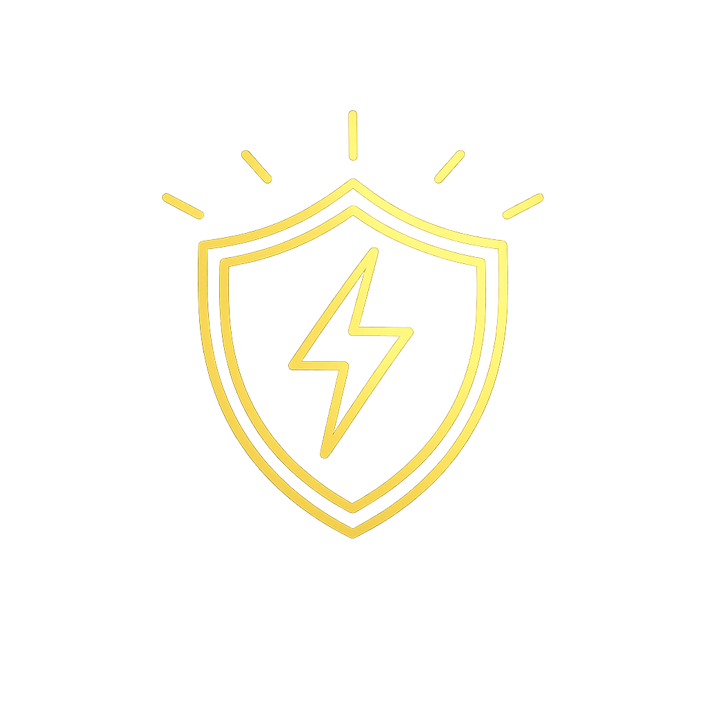
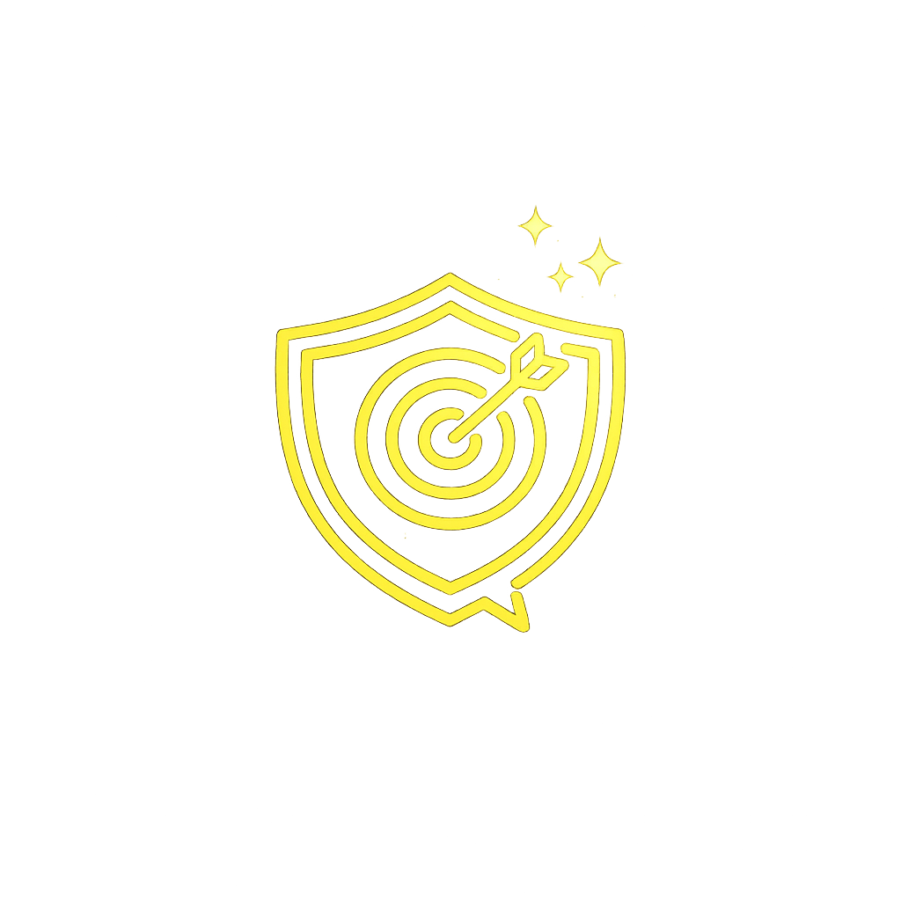
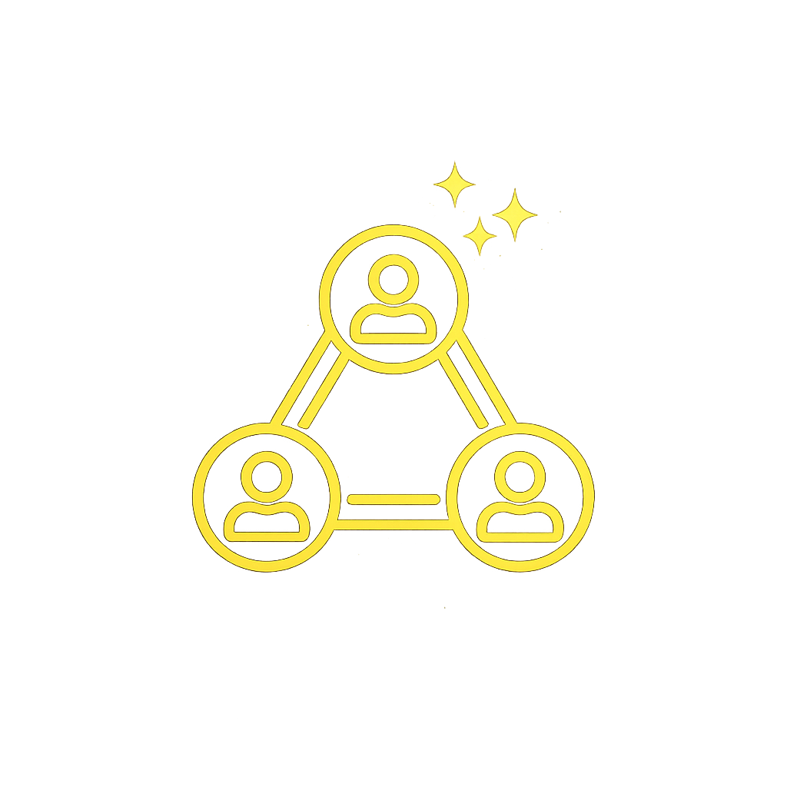
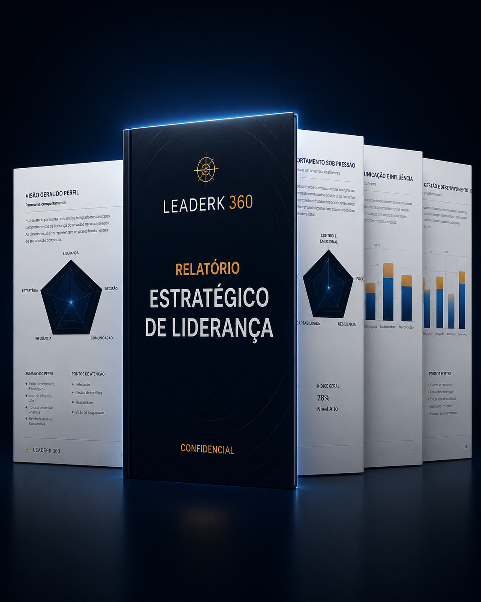

O líder que você acredita ser pode não ser o líder que sua equipe enxerga.
O LeaderK 360 analisa padrões de liderança, tomada de decisão, comunicação e comportamento sob pressão para revelar seu perfil estratégico predominante — e os pontos cegos que podem estar afetando sua influência.
Grandes líderes possuem padrões. A maioria não percebe os seus.
Muitos profissionais lideram equipes, tomam decisões e conduzem pessoas sem perceber como seu comportamento é interpretado por quem está ao redor.

Liderança sob pressão
Você mantém clareza em cenários críticos ou passa a centralizar tudo?

Comunicação estratégica
Sua comunicação inspira confiança ou gera ruído e resistência?
Tomada de decisão
Você decide por estratégia, impulso, controle ou necessidade de segurança?

Gestão de pessoas
Seu estilo fortalece a equipe ou desgasta talentos sem que você perceba?
O maior ponto cego de um líder geralmente é invisível para ele próprio.
O LeaderK 360 foi criado para transformar percepções subjetivas em uma leitura estratégica sobre comportamento, influência, pressão e impacto na equipe.
Algumas respostas podem incomodar. É justamente por isso que elas ajudam.
O assessment não mostra apenas um perfil. Ele aponta tendências que podem estar fortalecendo ou limitando sua liderança.
Você lidera por respeito, confiança, controle ou medo?
Em crise, você ganha clareza ou passa a centralizar decisões?
As pessoas compreendem sua direção ou apenas obedecem suas ordens?
Seu comportamento desenvolve talentos ou cria dependência?
Seu maior talento pode ser também o seu maior ponto cego.
Para todos que exercem ou desejam exercer liderança.
O LeaderK 360 foi desenvolvido para profissionais que lidam com pessoas, decisões, pressão, responsabilidade e influência no dia a dia.
Um modelo proprietário de leitura comportamental aplicado à liderança.
O LeaderK 360 utiliza uma estrutura objetiva de análise baseada em respostas graduadas, indicadores comportamentais e cruzamento de dimensões estratégicas.
Como a análise é estruturada
O assessment utiliza uma escala de resposta de 5 pontos, com perguntas distribuídas entre liderança sob pressão, tomada de decisão, comunicação, influência, gestão de pessoas, visão estratégica e comportamento operacional.
O que torna o relatório mais profundo
As respostas são interpretadas em conjunto para gerar indicadores derivados, como índice de pressão, estilo de comunicação, padrão de influência, orientação estratégica e impacto provável sobre a equipe.
*O LeaderK 360 é uma ferramenta de desenvolvimento e autoconhecimento executivo. Não substitui avaliação psicológica, clínica ou processo formal de seleção profissional.
Uma análise estratégica da sua liderança em poucos minutos.
Você responde ao assessment, recebe um resultado gratuito e pode desbloquear uma análise mais completa da sua liderança.
Responda ao assessment
36 perguntas desenvolvidas para mapear padrões reais de liderança.
Descubra seu perfil predominante
Identifique tendências comportamentais e estratégicas da sua liderança.
Receba sua análise personalizada
Tenha acesso a um relatório estratégico sobre sua forma de liderar.

Muito além de um simples teste de perfil.
O LeaderK 360 entrega uma análise estratégica sobre comportamento, influência, tomada de decisão e liderança sob pressão.
“Sob pressão, você tende a aumentar o controle e reduzir a escuta. Esse padrão pode gerar velocidade, mas também diminuir autonomia e confiança da equipe.”
Sua liderança deixa padrões. Descubra os seus.
Seu perfil pode revelar comportamentos que impactam diretamente sua equipe, seus resultados, sua influência e sua evolução profissional.
Gerar meu relatório gratuito